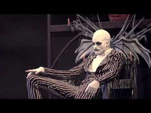
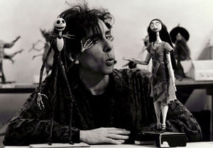

Pesadilla antes de Navidad
 De: La Frikipedia, la enciclopedia extremadamente seria.
De: La Frikipedia, la enciclopedia extremadamente seria.
De la serie cine para todos:
Pesadilla antes de Navidad.
| Director
|
Tim Burton.
|
| Productor
|
Will Smith.
|
| Actores
|
Esqueletos, muchos esqueletos, y niños asustados.
|
| País
|
El fantástico país de Halloween.
|
| Año
|
1990 después de Chuck Norris.
|
| Presupuesto
|
20 000 mil huesos.
|
| Secuelas
|
James y el melocotón gigante y La novia cadáver, no son reconocidas cómo secuelas oficialmente pero se parecen demasiado cómo para no tener nada que ver.
|
Nota: Artículo no recomendado a góticos ya que padecen del corazón, selectivamente, y les puede dar un infarto al leerlo. A ver si algun gótico hace una reforma protestante de una vez... Tampoco recomendado a los frikis que no hayan visto la película por que no pillaran nada. Sí gustará a los frikis que la hayan visto (eso espero).
¿Qué és?
Libro sagrado del gotiquismo que en 1993 fue adaptado al cine por su dios todopoderoso Tim Burton al que da mil vueltas Steve Jobs pero bueno. Cabe destacar que es la película de Disney más gustada por lo góticos. Pertenece al Antiguo Testamento (todo lo que pasó antes de que Tim Burton enviese a su mesías Johnny Depp). Concretamente es del Génesis Gótico, de cuándo aún viván en el Paraíso Gótico antes de ser expulsados por que un tío no se puso una ropa negra y dijo buenos días. Narra la historia de un profeta llamado Jack Skellington al que todos los bichos raros (una de las cualidades del paraíso gótico era que todo el mundo podia ser cómo su monstruo favorito o inventarse uno, siempre que cumpliese los estandares góticos) aclamaban por que llevaba un look y tenía un nombre que les parecía muy guapo. El caso es que el bicho este solía subir a un montículo movible que a veces se quedaba tieso (algunos creen que es un pene, el pene de la tierra o algo así, debe ser una metáfora por que nadie lo entiende) y un día que subió hasta lo alto de los cielos (hasta la luna seguramente, sí, el tío ese siempre está en la luna) Tim Burton se le presento e inicio el siguiente dialogo que aquí reproducimos con respeto a las creencias de las sagradas escrituras goticas:
- Jack, ¿tu crees en mi?
- Oigo voces. Ya decía yo que ese color de la agua de la fuente no era normal...
- ¡No, imbecil!... soy Tim Burton y te he escogido cómo profeta por tu look y tu nombre, que están muy guapos.
- ¿Cómo hiciste con Marilyn Manson?
- Sí, bueno, a él le fallaba lo del nombre...
- ¿Y, qué quieres?
- Tu eres un gótico devoto
- ¿Por qué crees que llevo un murciélago atropellado en el cuello?
- Tienes razón pero necesito una prueba de tu fe.
- Pero... Duermo en un ataúd, el color más vivo que he llevado es gris, soy más feo que el Fary comiendo limones, tengo cara de empando... ¿qué más puedo hacer?
- Deberás secuestrar a Papá Noel, cambiarle el nombre por Santa Clavos disfrazarte de él con lo que tengas a mano y pasar por todas las casas del mundo en menos de ocho horas regalando mercandising gótico y hablando bien de esta nuestra religión, es que hay escasez de góticos y a lo mejor reclutamos a alguno.
- Je, la mayoría nos cerrará la puerta en las narices.
- No, entrarás por la chimenea.
- ¿Qué? ¿Y por qué todas esas mariconadas? ¿No puedo ir tranquilamente casa por casa?
- No, que me aburro.
- Juega a cartas con los otros dioses.
- Somos una religión monoteísta.
- No, con los de otras religiones.
- Me marginan.
- Claro, a los góticos sólo nos soportan los demás góticos, por eso estamos en peligro de extinción y llamamos escoria a los que no son cómo nosotros.
- Exacto.
- ¿Y no podrías mandarme matar a mi hijo cómo hizo Dios con Abraham]?
- No que disfrutarías. Ve con dios, a no, que ese soy yo. Eh... Buena suerte Jack.
- Vale adiós. La vida es una mierda.
- Lo mismo digo.
Y nuestro heróe digo... Su héroe, el de los góticos, creía que estaba escribiendo un cuento, cómo soy escritor a parte de frikipedista, pero dejemos mi vida privada...Cómo buen devoto, Jack fue en seguida a la ciudad donde vivía Santa Claus, llamada Ciudad de la Navidad (que currados los nombres...) pero se dió cuenta de que su futura víctima era un gran hombre en todos los sentidos así que volvió a su pueblo a busacr ayuda. Convocó a todos los habitantes que no debían tener nada más que hacer a parte de asustar, suicidarse o intentarlo y chorrear sangre por lo que fueron todos, les explicó lo que le había pasado y cómo había intervenido Tim Burton todo el mundo se movilizó en seguida. Los unos prepararon el mercandising mientras otros preparaban el vehículo, la ropa, etc. Cómo ya todo el mundo iba muy estresado, incluído Jack, este no tuvo más remedio que llamar a ciertos niños del pueblo que estaban muy mal vistos por la gente pues uno de ellos iba vestido de rojo y lo máximo que toleraban era el lila, y además eran amigos de un vagabundo que cómo no tenía donde dejarse caer (se sabe que es pobre por que va vestido con un saco, está gordo por que... Tiene la barriga llena de aire, sí, eso es, no es que coma mucho) se quedó allí aunque no era gótico, venía de Jamaica y se flipaba a todo color, se cree que por porros, otra cosa por la que el tío y sus congéneres estaban mal vistos. Bueno, el caso es que Jack encargó a estos tres que fuesen a buscar a Santa Claus y le cambiesen el nombre, a pesar de la negación de sus súbditos, Jack lo hizo y lo justificó diciendo que todo el mundo era igual y por lo tanto merecía una oportunidad. Los tres chicos le trajeron y sólo se les ocurrió dejarlo con su amigo para que no se aburriera y desde luego no se aburrió... La resta del pueblo no se dió cuenta pues estaban ocupados prpearando los preparativos... Al cabo de poco partió y estuvo en varias casa, con el mero resultado del terror, pero él disfrutó cómo un niño con zapatos nuevos (expresión que debe ser una metáfora también, yo no disfrutaba con zapatos nuevos!). En vista del poco éxito y cómo al poco tiempo se ralló Tim Burton envió a Beatlejuice y Marilyn Manson (antiguos profetas góticos que ya habían muerto y ahora permanecían de ángeles góticos en la luna, a derecha y izquierda de su diós. Estos se materializaron en forma de luz de foco y bala de cañon respectivamente y dijeron a Jack que ya tenía el carnet de prfoeta y por lo tanto podía bajar y volver a dar misas en su pueblo, desgraciadamente había perdido la página del manual donde se explicaba a aterrizar así que lo hizo al estilo rústico que dirian en Bricomanía y perdió su traje de Papá Noel pero debajo se había dejado el suyo (traje o pijama no se sabe muy bien), menos mal, que miedo debe darun gótico desnudo... Lo norma hubiera sido que los ángeles salvesen a Santa Claus y le devolviesen a su tierra pero cómo eran un poco especiales... Jack bolbio, fue a la casa (o casino, aunque algunos creen que lo del casino multicolor es sólo una alucinación de Oogie boogie debida a los porros) donde estaba Papá Noel y se encontró con que había entablado amistad con el de los porros y estaban en pleno submarino, cosa intolerable por los góticos pues te lo pasabas bien, y además habían embaucado a una discípula suya! En un momento lo paró todo, se descubrió que Oogie Boogie había muerto hacía tiempo por las drogas y estaba siendo consumido por bichos (pero aún se aguantaba de pie por que en realidad era un pollo), la moraleja de la historia, Papá Noel se cabreó por que le habían cortado el rollo y además tenía que volver al trabajo así que cómo venganza hizo nevar en el pueblo de Jack para que se resfriaran. La discípula que rescató se enamoró de él y a Jack le pasó lo mismo por lo que se dieron muchos besos se lo pasaron muy bien y eso hizo que Jack se pasese al lado oscuro y se convirtiese en un pirata a todo color que decía mucho feliz (los piratas són el contrario de los góticos, són cómo los demonios para ellos, de toda la vida). Por eso al morir fue al infierno gótico (la isla pirata de Tortuga).
Reparto
 Uno que quizo audicionar para hacer de Jack, pero lo botaron porque estaba muy gordo para el personaje
Nota: al contrario de la creencia popular Pesadilla antes de navidad se rodó con actores reales.
- Jack Skellington: fue "interpretado" por una modelo rapada al cero. Cómo no tenía ni idea de cantar y actuar pero era la única que coíncidia con la descripción de los textos sagrados góticos (un equeleto muy flaco, demasiado flaco, incluso para ser un esqueleto) así que le dijeron que se dejese muerta para que la fuesen poniendo en diferentes posturas, una despúes de la otra, para luego pasarlas muy rápido y que pareciese que andese, cantase o lo que fuese. Obviamente también fue doblada para que pareciese que cantase y hablase. Del personaje bíblico se habla en su artículo. Es fan de el Grinch y tiene todos sus cromos.
- Sally: primero enamorada y despúes novia de Jack que le condujo a lado oscuro gótico. Sí, antes era una pija que odiaba el color negro y sólo vestía de rosa. Pero un día vió a Jack y se enamoró, y como observó que le ponía lo gótico, se hizo
puta gótica. No se sabe si es un zombi, un monstruo tipo Frankestein, la hermana mayor del muñeco Chucky (hijo bastardo de Chuck Norris), una muñeca de trapo o si es que ha sufrifo un accidente de coche. Sólo se sabe que es tía, o no.
- El alcalde de dos caras: en la película era un robot tipo el Tiranosaurio de Parque Jurásico, por que no encontaron a nadie con esa voz tan paranoica. Tenía dos caras por que no les llegó el presupuesto para dos cuerpos pero en los textos sagrados originales eran dos hermanos gemelos. Su voz ha hecho que los frikis le consideremos el verdadero protagonista de la historia. Actualmente, vende palomitas en Florida, en la entrada de un Rodeo.
- Niños liantes: los pongo cómo un sólo personaje por qué actuan cómo alguien sólo pero en realidad son tres y se llaman Lock, Shock y Barrel. El Pato Donald les denunció por qué dijo que eran un plagio de sus sobrinos, lo que fomentó aún más el odio que le tenían los góticos (antiguamente el pato había sido Pirata).En la película y el libro (que són góticos católicos) se les pinta cómo niños muy malos pero en el futuro se les venerará pues en 3003 fundarán junto a Jack Skellington la rama protestante del gotiquismo que, entre otras cosas, tolerará a los piratas, que pesado soy!
- Oogie Boogie: aunque arriba no lo pone es el nombre del pobre incomprendido al que los góticos católicos calificaron de malvado sólo por que le gustaba mucho el chocolate y eso es una cosa feliz. Está en el nivel 99 de puntos de vida, muuuuuuuuuuuuuuuuuuuchoooooooooooooos. El teatro de Nueva York le contrató cómo cantante de ópera y actualmente vive produciendo musicales en Broadway, se ha casado con Julia Roberts y tiene un Yorkshire de mascota. En 2008 fundará una asociación antigóticos y le nombrarán cardenal del Vaticano por lo que en 2032 será el Papa de Roma sustituyendo a Morgan Freeman (el amigo negro de Robin Hood).
- Zero: el que está antes del uno. No, es broma. Es el perro de Jack y párroco del pueblo. Reconstruído a partir de un kleenex, Zero es el más aseñado del pueblo. Tras este desastre dimitirá cómo mascota, se pondrá unas gafas y una corbata y trabajará de ientífico. En 1993 presentó a la Cofradía de Cienifícos Muertos de Hambre unos brazoz mecánicos que funcionaban a partir de electricidad producida por Coca Cola y Mentos con los que intentó ganar el Nobel pero Rudolph (sí, el reno) se le adelantó presentando el Oloscopio y ganó, lo que trabó aún más la enemistad entre ellos dos que aún perdura (han reclutado ejércitos etán luchando desde hace tiempo en el desieto).
- Papá Noel: en la película y en los textos sagrados lo interpreta el verdadeo Papá Noel que sobrevivía desde tiempos prehistóricos. Es muuuuuuuuuuuuuuuuuuy viejo (hijo de Carmen Sevilla). Aunque no lo cuente en los textos sagrados el malvado Tim Allen, más conocido cómo el espeluznante Doctor Chapuzas en Casa, aprovechando el cansancio que Santa Claus llevaba le asaltó y mediante una cosnpiración entre él y los elfos se proclamó Rey de la Navidad. Se puede ver en el documental producido por George W.Bush, Vaya Sanat Claus!. Pero en 1999 tanto los elfos cómo él recibieron su merecido por King Africa, el actual Papá Noel que prepara una nueva versión de la película para 2014 en la que interpretará a todos los personajes y cambiará las canciones por unas más a su estilo. Tendrá muy buena acogida entre los no góticos que la consideraran una beuna comedia pero los góticos, cabreados raptarán a Santa Clavos (cómo ellos le llaman) y será sustituido por Woody Allen, el actual Superman.
- Dr Finklestein: aquí conocido cómo doctor cabezón. Un tío muy feo. Los góticos le consideran normal pero los demás creen que es un delincuente que colecciona huesos, es muy malo con Sally y el Pajáro Loco (su anterior mascota) y se casa con su hermana. Está lisiado por un accidente que tuvo con una chimenea cuándo intentó salvar la navidad de las garras de Jim Carrey y no lo consiguió, lo que le frustró para toda la vida.
- Y un largo etcétera: el conejito, el tipo que dice conejito, el payaso, el dinosaurio, Cruela de Vil, el Sheriff, Patricio Estrella, Billy y Mandy... Soy un cacahuete!
Sabías Qué
 Tim, cuando era niño, ya jugaba con sus muñecos de Pesadilla Antes de Navidad, los cuales el mismo construía en base a los huesos de otros niños que asesinaba.
- ... Esto es halloween?
- ... Tim Burton creo el libro cuando era sólo un niño?
- ... Todos los góticos sueñan con ser Jack?
- ... Tim Burton no dirigió la película?
- ... Por eso no actúa Johnny Depp en esta?
Autor(es):
- Nexo
- EmuAGR
- Frikiman
- Aque
- Dr Doggy
- Roms
- Heliezer
- Frikih
- AlemanH
- Alven94
Frikipedia 2005-2016, Licencia
GFDL 1.2 - Extraído por FrikiLeaks